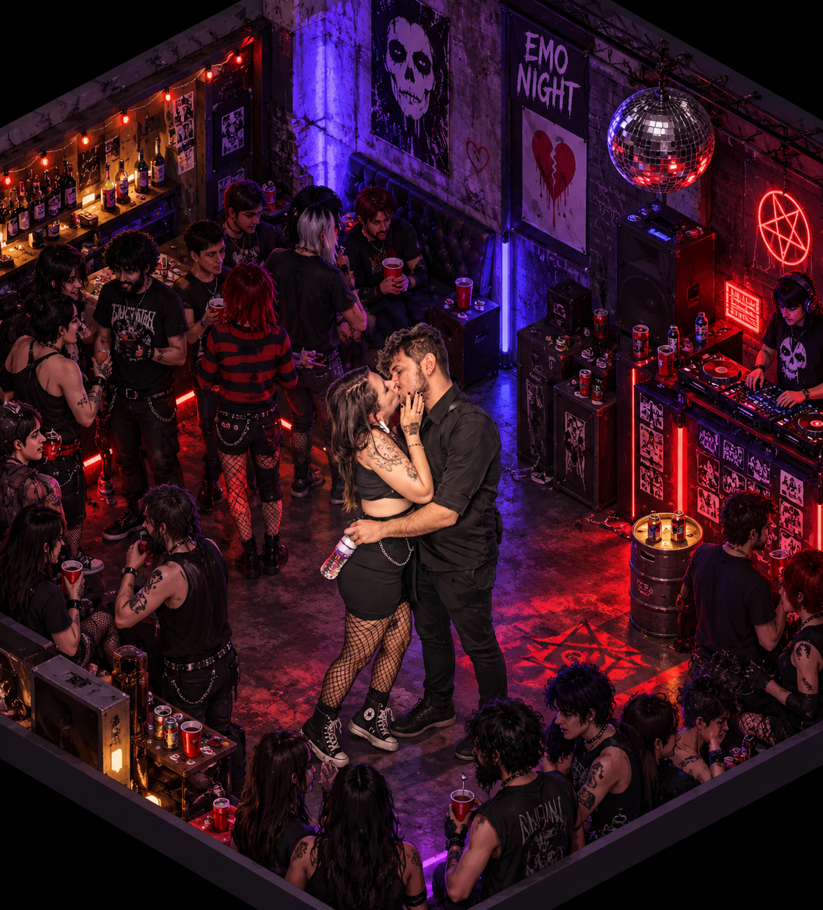

UM PRESENTE DE GABS PARA TIFF
Um salto no tempo.
Sempre com você.
Esta noite, o castelo tem dois convidados especiais.
ATO 01 / A CHEGADATIFF & GABS ♥ ♥ ♥
EM ALGUM LUGAR, FORA DO TEMPO…
G
GABS
Tiff, achei um lugar pra gente passar a noite.
O que poderia dar errado?
UMA NOITE ESTRANHA. A MELHOR COMPANHIA.
Siga as setas. A pista é sua!0 / 60
AQUI
♥ ENTRE NO RITMO
✦ INSPIRADO EM THE ROCKY HORROR PICTURE SHOWFEITO DE PIXELS & AFETO
ATO FINAL / SÓ NÓS DOIS
Tiff, eu escolheria você
em qualquer linha do tempo.

VALE UMA NOITE COM GABSRocky Horror + nós doisTRAJE: O QUE DER VONTADE · DESTINO: JUNTINHOS
Vamos pedir um BOB
Porque até uma noite fora do tempo termina do nosso jeito.
Com amor, Gabs ♥